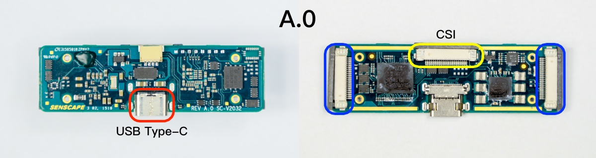
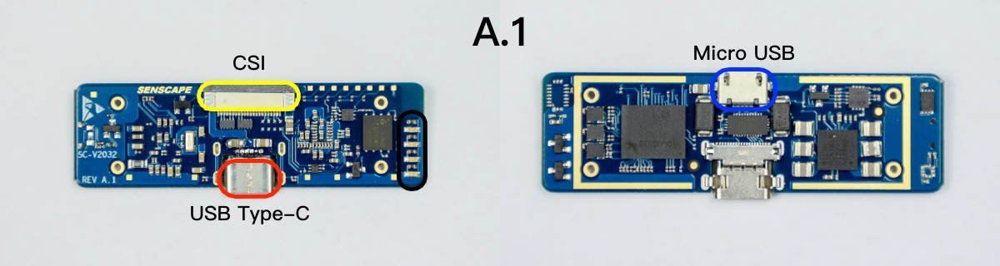

本产品支持在Ubuntu、CentOS、Fedora、TK1、MacOS、Raspbian（树莓派）操作系统上运行。
请访问我们的Github repo来获取最新的 SungemSDK。
解压文件或在终端输入下载SDK
git clone https://github.com/HornedSungem/SungemSDK.git
Ubuntu 16.04+ 系统上进入SungemSDK/installer/Ubuntu，运行
sudo ./install.sh tuna
树莓派Stretch版本系统上进入SungemSDK/installer/Raspbian，运行
sudo ./install.sh tuna
Mac 系统上进入SungemSDK/installer/macOS，运行
./install.sh tuna
提示
- 参数
tuna将使用国内清华pip安装镜像，可大幅提升下载速度。如在国外或不需要国内镜像可不加参数。- 国内访问树莓派
apt源也非常缓慢，在SungemSDK/tools目录下也提供了切换清华源镜像的脚本，推荐国内树莓派用户更换。- 如果使用
VMware等虚拟化软件检测不到设备，将虚拟机USB兼容性设置为USB 3.0。
新版本更新需固件升级时，请进入API文件夹然后输入：
python3 upgrade.py -f file # file为升级补丁文件
你可以在我们的Github Releases页面找到固件升级文件。

A.0 版本采用 USB Type-C 接口，支持 USB 3.0 协议；摄像头模块与角蜂鸟之间，采用 CSI 接口直接连接；两侧预留了双目摄像头接口，可实现立体视觉系统，目前尚未用到。

A.1 版本相较于 A.0，取消了两侧预留的双目摄像头接口，安装了4颗LED指示灯，并且新增了 MicroUSB 接口，可以为角蜂鸟提供额外的供电。
4颗LED灯的含义，如图所示从上到下分别为：
- 电源指示
- 温度指示，温度大于80℃时自动降频
- 神经网络运行指示
- 神经网络输入等待指示